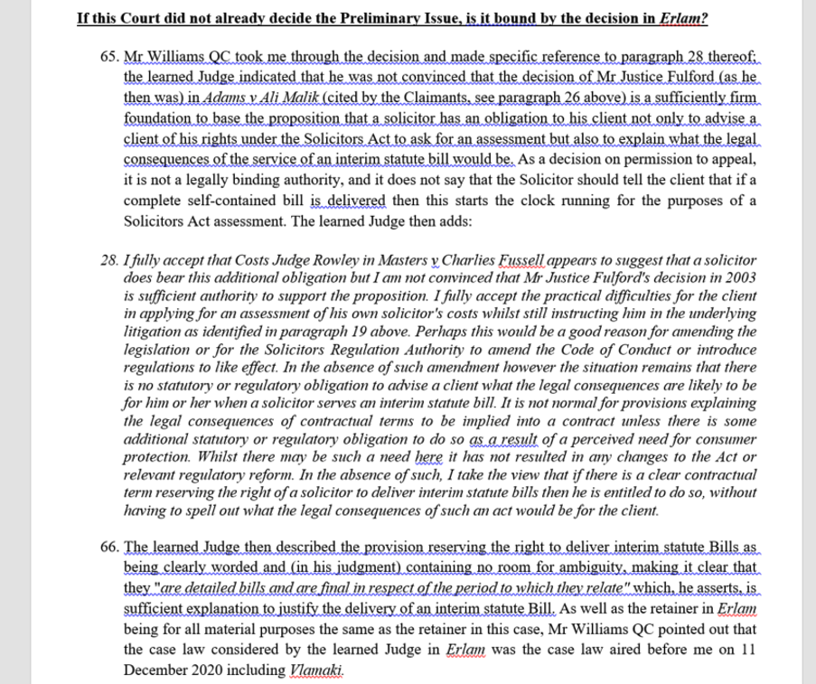
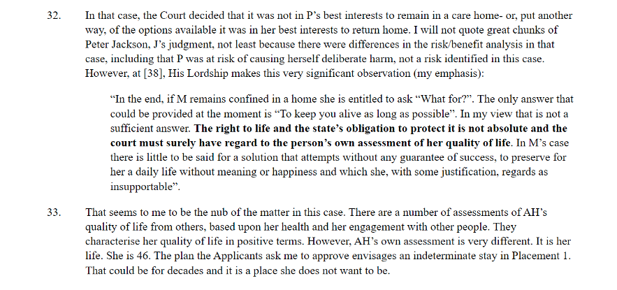

Quotations are the only sections of text that need to be indented differently to the rest of the text – this is to ensure that the numbers do not interrupt the reading of the a judgment or decision.
Jugmohan Boodia & Anor v Richard Slade t/a Richard Slade & Co Solicitors

Lancashire & South Cumbria NHS Foundation Trust & Anor v AH [2023] EWCOP 1
